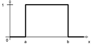

The  DL System (see also
latest changes)
DL System (see also
latest changes)The DL System (see also
latest changes)
fuzzyDL is a joint project
with Fernando
Bobillo
fuzzyDL is a Description Logic Reasoner
supporting Fuzzy Logic and fuzzy Rough Set reasoning. The fuzzyDL system includes
a reasoner for fuzzy SHIF with concrete fuzzy concepts (ALC
augmented with transitive roles, a role hierarchy, inverse,
reflexive, symmetric roles, functional roles, and explicit
definition of fuzzy sets). There is also a Protege plug-in that
supports Fuzzy OWL2, to
build fuzzy ontologies.
fuzzyDL source code is
now available from https://github.com/umberto-straccia/FuzzyDL
fuzzyDL's most interesting
features are:
it extends the classical Description
Logic SHIF to the fuzzy case it allows the explicti definition of fuzzy concepts
with left-shoulder, right-shoulder, triangular and
trapezoidal membership functions it supports concept modifiers in terms of linear
hedges it supports General Inclusion Axioms
it supports "Zadeh semantics" and Lukasiewicz Logic
it is backward compatible, i.e. it supports classical
description logic reasoning full support of Mixed Integer Linear Programming
optimization it supports fuzzy Rough Set reasoning within fuzzy
DLs fuzzyDL is a joint project with Fernando Bobillo.
Some
applications:
Matchmaking Knowledge-based Image Interpretation Multi Criteria Decision Making Clinical Decision Support Logic-based
Fuzzy Control Systems An example:
The following knowledge defines the classes of Minors and
Young Persons.
(define-fuzzy-concept LessThan18
crisp(0,100,0,18)) (define-fuzzy-concept LowAge
left-shoulder(0,100,10,30)) (define-concept Minor (and Person (some age
LessThan18))) (define-concept YoungPerson (and Person (some
age LowAge))) (functional age) (define-modifier very linear-modifier(3))
(define-concept VeryYoungPerson (very
YoungPerson)) Axiom 5 asserts that age is
functional, i.e. a person has one age only. Axiom 1 asserts that the concept LessThan18 is
a fuzzy set with a crisp membership function crisp(k1,k2,a,b))
of the form below, where [k1,k2] is the domain.
Essentially, it says that the domain is [0,100] and that
membership is 1 for x in [0,18] . 
Axiom 2 asserts that the concept LowAge is
a fuzzy set with a left-shoulder membership function
left-shoulder(k1,k2,a,b) of the form below.

Axiom 3 defines the concept of Minor
as a Person whose age is LessThan18,
i.e. less than 18. Axiom 4 defines the concept of YoungPerson
as a Person whose age is LowAge.
As a consequence, under Zadeh semantics we get that a YoungPerson
is a Minor to degree 0.4. Indeed,
(concept-subsumes? Minor YoungPerson)
returns 0.4.
On the other hand
(concept-subsumes? YoungPerson Minor)
returns 0.6, which is the degree of being a Minor
a YoungPerson.
Other membership functions supported by fuzzyDL are shown below.
|
|
|
Right-shoulder function |
Trapezoidal function |
Triangular function |
|
Linear Modifier |
Axiom 6 defines the modifier very
using linear-modifier(c), where a = c/(c+1),
b=1/(c+1) Axiom 6 defines the concept VeryYoungPerson
as a very YoungPerson.
As a consequence.
(concept-subsumes? VeryYoungPerson Minor)
returns 0.2, which is the degree of being a Minor
a VeryYoungPerson.
On the other hand
(concept-subsumes? Minor VeryYoungPerson)
returns 0.8, which is the degree of being a VeryYoungPerson
a Minor.